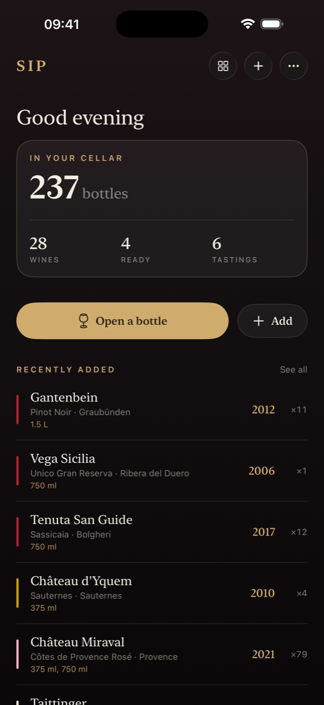
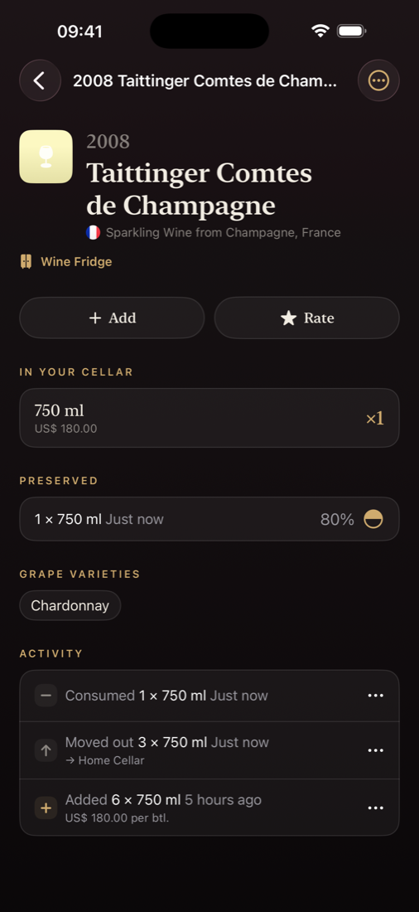
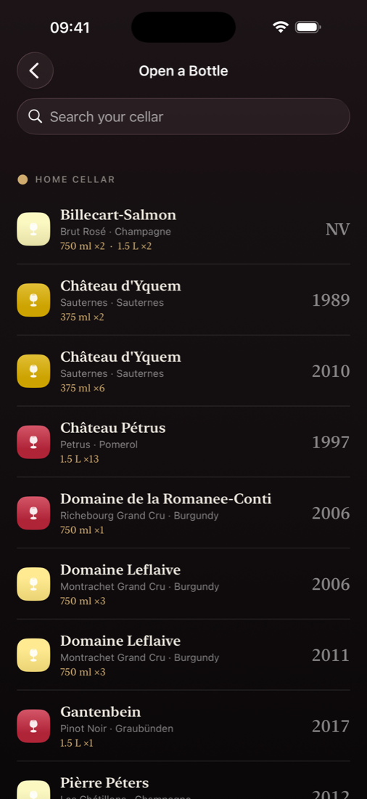
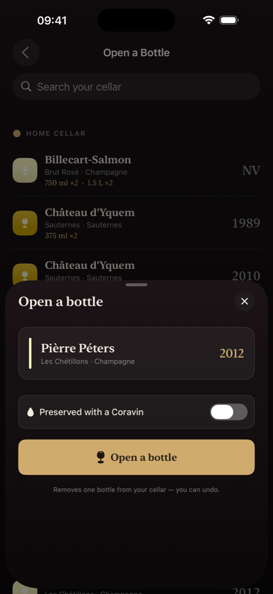
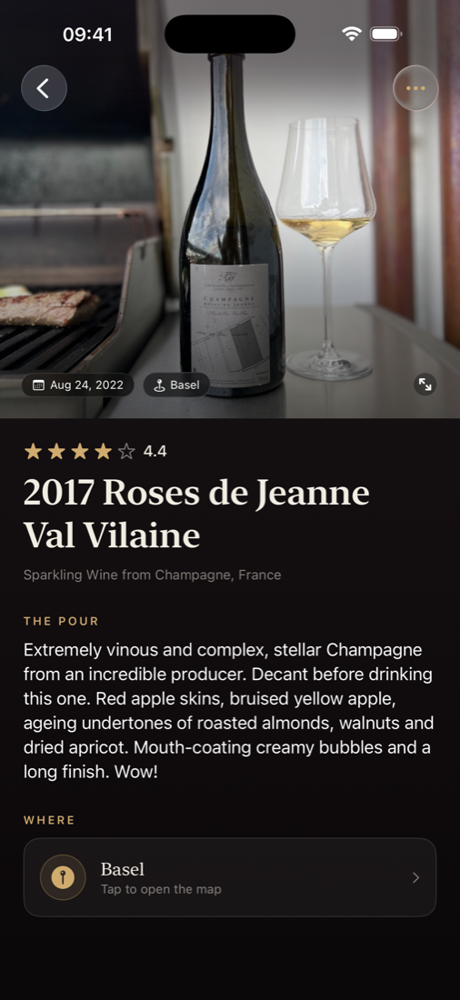
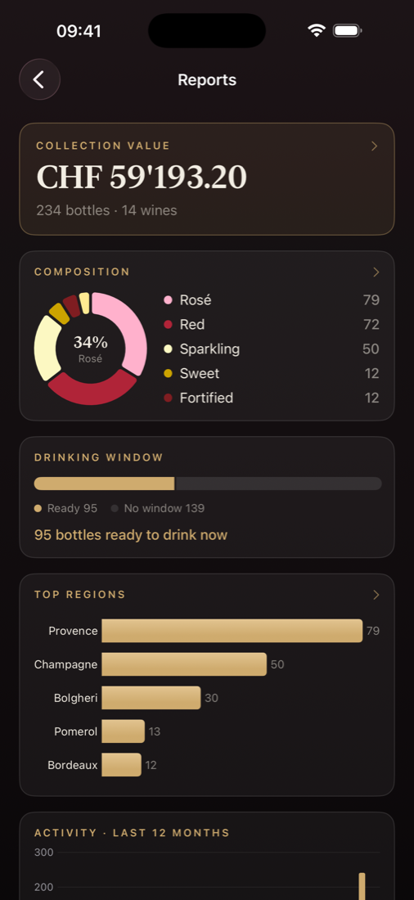

For people who would rather drink wine than maintain a spreadsheet
Track every bottle. Remember every glass.
Download on the App StoreFree up to 20 bottles and 20 tastings · iPhone & iPad

The Cellar
Sip keeps the ledger so you don't have to: what you bought, where, for how much, and which bottles are still resting downstairs. Your stock by size, with store and price, at a glance.

The inventory updates. The journal remembers.


The Journal
Photos first: a memory wall of everything you've tasted, and every entry a magazine-style spread with full-bleed photos, notes, ratings, and place. Log wines you don't own, too. A great bottle at a restaurant belongs in your journal.

“Mouth-coating creamy bubbles and a long finish. Wow!”A note from the journal · Roses de Jeanne, 2017
The Insights
What you drink, what it costs, what's ready tonight. Reports on consumption, composition, regions, and value, drawn from your own ledger and presented like the back pages of a good wine magazine.
